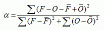
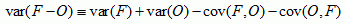
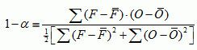
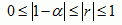

The alpha index can be used to compare the random error of a model or forecast between regions of different observational variability (Koh and Ng, 2009). It is given by

where the squares are replaced by inner
products if the variable is a vector (e.g. wind). It ranges between 0
and 2, where the perfect score is 0.
Alpha is a normalized measure of unbiased error variance, where the normalization factor is the reciprocal of the sum of forecast and observation variances. Unbiased error variance itself tends to follow the trend of observation and forecast variability, evidenced by the identity:

In other words, the difference between two different largely varying signals tends to be large as well. Such influence of observation and forecast variability is effectively removed by the normalization.
Alpha is a "truer" measure of random error than the usual mean squared error (MSE) of bias-corrected forecasts. The latter measure tends to be misleadingly small if the observation has small uncertainty (e.g., wind near the surface, temperature near the equator) or if the model under-predicts the variability.
Another advantage is that alpha being dimensionless can be directly compared for different variables. This allows quantitative assessment of the relative predictive capability of a model with regards to those variables.
Note that from the identity above, alpha is related to a normalized measure of covariance:

and so can be related to Pearson's correlation coefficient r:

For imperfect observations, it can be proven that alpha is the upper bound of the normalized random error.
Reference
Koh, T.Y. and J.S. Ng (2009), Improved Diagnostics for NWP Verification in the Tropics, J. Geophys. Res., 114, D12102, doi:10.1029/2008JD011179.
http://www3.ntu.edu.sg/home/kohty/spms/publication.htm